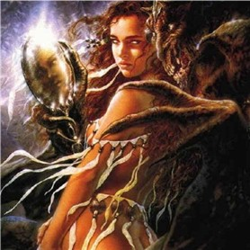

Forums galactiques > Assemblée Galactique : diplomatie officielle > Comment je suis devenue un monstre.
Pages : 1
| Démétra Respect diplomatique : 26  17/09 ETU 18:22 | Score : 7 Détails 1er juin, Aederis petite planète de la galaxie 1.
Je commence aujourd'hui ce journal pour raconter mon histoire, avant ce jour je n' étais qu' une simple dirigeante, j' ai toujours été avide de pouvoir et j'ai toujours trouvé normal que cette place me revienne. J'aime la poesie, et c'est avec elle que je tenais dans mes longues journée les unes apres les autres diriger un simple pays ne me sufisait pas, j' erais désoeuvrée. Il y a de cela 3 mois j'ai dirigé une grande guerre ou j'ai conquis ma planete à la force de mon épée et de mes armées, je découvre aujourd'hui que nous ne sommes rien, j'ai découvert en 30 jours l' existance de la vie dans notre système solaire, nous ne sommes donc pas les seuls, peu apres j' ai apris l' existance d'une galaxie à laquelle nous appartenons, il y aurais plusieurs système dans une galaxie? Je commence à douter quel poid avons nous si nous sommes si petits... | ||
| Démétra Respect diplomatique : 26 17/09 ETU 18:34 | Score : 7 Détails 6 Juin, 20h 40 jardins du palais.
Je me suis rendue aujourd'hui à l' assemblée galacitque, je ne savais pas il y à deux jours qu'un tel endroit existait, je me suis fait toute petite et je ne crois pas qu' on m' ai remarqué, je me suis assise au fond, j' ai écouté les débats et je n' ai pas participé. 2 Juillet, 8h22 J'ai conquis à ce jour mon premier système, j' ai changé, je ne doute plus, je suis sure de moi et j'ai perdu le sens de la pitié je crois que ces changements sont mauvais mais je ne peut les empécher, j' ai juste peur de me battre demain contre les principes que j' ai mis tant de temps à mettre en place yère. Je déambule dans les couloirs de mon palais et commence à m' ennuyer j' en veut toujours plus, plus de pouvoirs plus de puissance, je serais à compter de ce jour vétue de noir c'est ma façon de rendre un hommage silencieux aux millions de vie que j' ai détruites. | ||
| Démétra Respect diplomatique : 26 17/09 ETU 18:43 | Score : 6 Détails 17 juillet, Bureau de la tour nord, palais de Déménos
Aujourd'hui je suis retournée à l' assemblée, je suis arrivée tres courtement vétue, j' ai détruit une porte et je suis arrivée avec grand fracas, fini la gentille Démétra place à l' agressive panthère des étoiles, je cherche des alliés, je pense etre bientot en mesure de visiter d' autres systèmes et de les soumètre. Je clos aujourd'hui ce journal car il est maintenant remplis de mon passé et j' oublis ce temps maudit ou j' était une faible, aujourd'hui je suis déterminée et ma force seras ma volontée. Je laisse ce bouillon au placard. Adieu mon passé et bonjour à mon futur... | ||
| Démétra Respect diplomatique : 26 17/09 ETU 18:48 | Score : 2 Détails (Excusez moi d'avoir baclé à ce point mon RP, La suite viendra au fur et à mesure de mon évolution, sous la forme de carnets de voyages et de petits épisodes de vies raconté comme je les aurais vécus, vous voici à la fin de la première partie.
Si vous souhaitez faire des commentaires merci de les faire par MP) | ||
| Demettra Respect diplomatique : 348  12/11 ETU 18:59 | Score : 7 Détails (Oups, mauvaise manip, la suite de mon RP s'est évanouie dans le néant quand j'ai oublié de me reconecter apres l' expiration de mon temps de conection, voici le début que j'ai recopié et je m'excuse encore de ne pouvoir vous présenter la suite faute de temps... Bonne lecture quand même.)
2 Octobre, Rue sombre des bas cartiers de Wohorel. La chaleur est insupportable, la fumée s'envole dans le ciel d'un noir d'encre. C'est une froide nuit d'automne pourtant ici on suffoque, croirait mourir dans un immense bain de vapeur puant dont les effluves envahissent la rue bondée. C'est dans cette crasse et dans ces cartiers mal famés que circule Demettra, sa peau brune luit de perles de vapeurs et ses cheveux bruns cascadent sur ses épaules fines, elle est simplement vêtue, d'un ensemble de haillons qui découvrent ses bras, son ventre et ses jambes. Ses pieds menus chaussés de sandales montantes entrelacées de liens de cuirs se posent avec un bruit mat sur le pavé sale, elle avance d'une démarche souple et féline d'un pas déterminé. |
Pages : 1
Forums galactiques > Assemblée Galactique : diplomatie officielle > Comment je suis devenue un monstre.